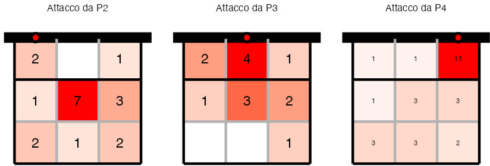
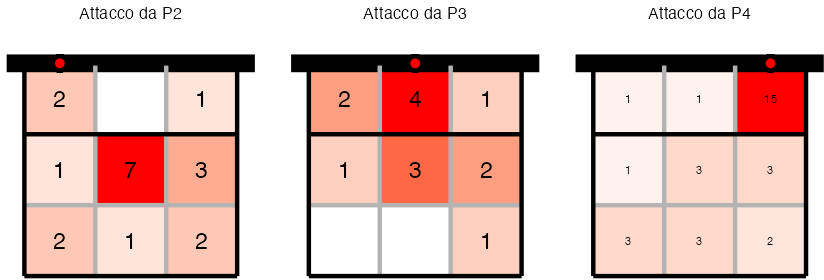
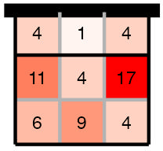

| Giocatrice | Attacco | Battuta |
|---|---|---|
| Beatrice Numero: 7 |
|
|
Il puntino rosso denota la zona di partenza dell’attacco, mentre l’intensità del colore delle diverse zone del campo indica il maggior numero di attacchi arrivati. Il numero al centro delle diverse zone indica il numero di attacchi arrivati in quel punto del campo.

L’intensità del colore delle diverse zone del campo indica il maggior numero di attacchi arrivati. Il numero al centro delle diverse zone indica il numero di attacchi arrivati in quel punto del campo.

4 sono stati Ace
13 sono stati errori
2 non ci hanno permesso di attaccare
| Su chi battere | In che zona battere | Chi evitare |
|---|---|---|
|
|
|
Ricevono molto corte, quasi sui 3 metri, quindi battere lungo
Giocano in penetrazione, quindi cerchiamo la parte sinistra (P1-P2) del loro campo
| Su chi attaccare | In che zona attaccare | Chi evitare |
|---|---|---|
|
|
|
Difendono molto corte, quindi attacchiamo lungo.
Stesso discorso vale per le FB, devono essere negli ultimi 2 m di campo verso P1/P6
Giocano in penetrazione quindi FB sempre sul palleggiatore
Il nostro palleggiatore di prima linea dovrebbe chiamare sempre la posizione del palleggiatore del Parella dicendo: “Prima linea” o “seconda linea” in modo che tutti sappiano dove mandare la palla
Andiamo a divertirci e vincere la partita, che ce lo meritiamo!!